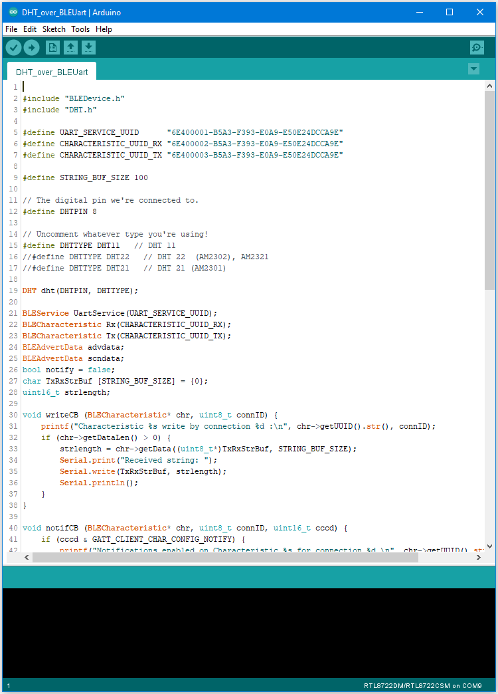

[RTL8722CSM] [RTL8722DM] BLE – DHT over BLE UART¶
Materials
Ameba D [RTL8722 CSM/DM] x 1
DHT11 or DHT22 or DHT21
Android / iOS smartphone
Example
Introduction
In this example, the data obtained from a DHT temperature and humidity sensor are transmitted over a BLE UART service to a smartphone. Refer to the other examples for detailed explanations of using the DHT sensor and the BLE UART service.
Procedure
Connect the DHT sensor to the Ameba board following the diagram.

Ensure that a compatible BLE UART app is installed on your smartphone,
it is available at:
– Google Play Store:
– Apple App Store:
Open the example, “Files” -> “Examples” -> “AmebaBLE” -> “DHT_over_BLEUart”.
{kind=link}
Upload the code and press the reset button on Ameba once the upload is
finished.
Open the app on your smartphone, scan and connect to the Ameba board
shown as “AMEBA_BLE_DEV” and choose the UART function in the app.
{kind=link}

After starting the UART function, notifications should be received every 5 seconds containing the measured temperature and humidity.